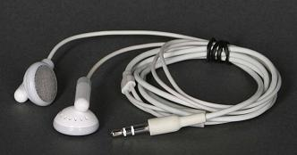

Overdubbing using your computer's on-board soundcard
- On Windows or Linux, try unmuting your input in the playback side of the system mixer. This will give you low latency hardware playthrough of what you are recording.
- On all operating systems, try in Audacity instead, but this will always mean you hear yourself late and could cause audio breakup.
- To achieve lower latency software playthrough on Windows you can:
- (Only gives somewhat lower latency): On Windows, right-click over the Speaker icon by the clock, choose Recording Devices, right-click over the input, choose Properties then on the "Listen" tab, enable "Listen to this device".
- (Advanced) Compile Audacity with ASIO® true low latency support. Ask on the Compiling Audacity board of the Forum if you need help.
Introduction
This tutorial describes a known working method of creating a multiple sound track overdubbing session from scratch in Audacity; that is, you record one track and then play it back and add a second track against it -- drums, guitar, voice -- repeat as needed.
This process uses your computer's built-in microphone and a pair of headphones. You must be happy with not hearing yourself -- your live performance -- in real-time in your headphones. You will hear all the previous tracks mixed as you wish, but your live voice or performance will not be in the mix until you finish recording and play the whole thing back. Including your live voice in the electronic mix on a home computer can be very difficult.
Hardware
Almost any Windows®, Mac® or Linux® machine with a built-in microphone can be used.
Our example here uses Mac earbuds for listening, but nearly any good headphones or earbuds are OK.
- 
First Recording
First we will make a simple recording with no overdubbing or other fancy tricks. The system has to work correctly for simple recording and playback before we go further.
This is not a tutorial on making a recording and playing it back, but you need to be able to do that before you do anything else. There are multiple tutorials on Recording.
Connect the headphones.
Set the computer control panels, Audacity Preferences and Audacity dropdowns to recognize the computer's built-in headphones for playback and to use the built-in microphone for recording.
Set Audacity Preferences:
Click on (on a Mac this is )
- in the Quality tab:
- set Default Sample Rate to 44100 Hz

- set Default Sample Format to 32-bit float
- set Default Sample Rate to 44100 Hz
- in the Devices tab:
- Under Playback set Device to the on-board soundcard
- Under Recording set Device to the on-board soundcard and set Channels to 1 (Mono)
- in the Recording tab:
- check
 Overdub: Play other tracks while recording new one
Overdub: Play other tracks while recording new one - uncheck
 Software Playthrough: Listen while recording or monitoring new track
Software Playthrough: Listen while recording or monitoring new track
- check
Click once anywhere inside the recording meter (the one with the mic icon) to put the meters into Monitor Mode. They will display the microphone's sound level without starting Audacity recording and wasting drive space. This may fail on certain Linux machines using Jack.
Find your microphone; scratch or tap around your computer until the Recording Meter goes sharply up. Some computers have it in the lid, some in the grill just beside the left Shift key.
Play or sing into the microphone. Adjust Audacity's recording control so you do not peak much over -10 to -6 on Audacity's meters. You can fix low levels later, but you cannot fix overloading, smashing, and clipping (meters too far to the right).
Click "Record"; Audacity will take a second to configure itself and start recording. The blue waves will start to crawl left to right as you perform. Play or sing a simple song that you can use for rhythm and timing tests later.
Click "Stop", then "Home" and then click "Play" to hear the track you have just made. You should hear the track in your headphones. This is all you will hear during the overdub sessions. You will only hear your voice or instrument in your headphones after you record it.
Setting the Recording Latency
Latency refers to the delay between the time the audio enters the computer and the time Audacity is able to record it to a track. For example, if you are recording a keyboard track, latency is the delay between the time you strike a key and the time that note is recorded.
For instructions on how to adjust the latency please see the Latency Test page in this manual.
- (Only gives somewhat lower latency): On Windows, right-click over the Speaker icon' by the clock, choose Recording Devices, right-click over the input, choose Properties then on the "Listen" tab, enable "Listen to this device".
- (Advanced) Compile Audacity with ASIO® true low latency support. Ask on the Compiling Audacity board of the Forum if you need help.
Performance
Click on the [X] in the Track Control Panels to delete all the test tracks. You're ready for the first proper recording session. The first recording can be whatever you're planning to use as a base, backing track, guide or rhythm track. It can be anything including which can be adjusted with its control panel for rhythm and composition. You could use the music from a rhythm and chord machine playing to the mixer. You could use existing sound files.
You should record a lead-in. That is, a non-musical rhythmical clue before the music starts so as to warn you of the imminent start. In a live band, this would be the drummer or lead guitar count-in. You could use the keyboard rhythm stops or you can perform several rim shots into the microphone to establish the rhythm before the first note; tapping on the table with a pencil also works. You can sheer it off later in post production so nobody else will hear it. Tick, tick, tick, tick, music; adjust as appropriate for music type and rhythm.
Click "Stop", then "Home" and then "Record" to record track two using your live performance and track playback in your headphone mix as a guide. Repeat for as many tracks as required.
The "Mute" and "Solo" buttons to the left of each track are valuable in overdubbing. Solo causes only that track to play and Mute turns that track off. Solo has options that can be set in Preferences. The little volume control to the left of each timeline also controls the playback volume -- it affects the headphone mix.
When you get to a stopping point, click on "Stop" and to save your project. As you progress, you should save a new Project periodically with a slightly different file name. A good recommendation is to use ISO date and time for the file names or the start of the file names; also, refrain from using slash marks or other punctuation marks in a file name.
201110011500.aup That's 3PM. 2011 October First, 1500hrs.
Then save a new version of the song about every twenty minutes:
201110011520.aup
201110011545.aup
Do not go weeks with one Project and file name, and never cover up or record over existing work. If anything happened to that one Project, your project would be ruined and could nullify weeks of work. Think of what would happen if the lights went out right now, the computer ground to a halt and you were forced to use the last known good version of the show.
For extra safety it is good practice to periodically back up your project versions to a DVD-R or external hard drive for archive purposes. Remember that it is important to keep the AUP file and the _data folder together. One way to make sure of this is to create a zip archive of the AUP file and _data folder. In the unlikely event that the Audacity project is corrupted or your hard drive crashes you will be able to recover your work.
Note that Audacity projects cannot be played in computer media players nor burned to audio CDs. Export your project as 16-bit WAV or AIF for burning to a CD, or to MP3 for email or internet delivery. See Mixing for advice on doing the final mix of your project.
Troubleshooting
- How much hard disk space do you have available? If your only experience with computer files is with spreadsheets, email or Photoshop pictures, live audio (and video) production will stun you with the amount of disk space it consumes. With high quality overdubbing and UNDO, project files and folders get big in a hurry; with periodic saving, a project can get very seriously large.
- Communications features on newer Windows machines can cause unwanted changes in recorded volume or make the recording sound tinkly and/or hollow; see this FAQ
- You can try to listen to yourself in the headphones by changing an Audacity setting: : and check [X] Software Playthrough (select for ON).
- Record a track with that setting. Chances are terrific that your headphone voice and your real voice are not going to match. This is computer or sound channel latency and there's no adjustment for it. You should probably leave that setting deselected.